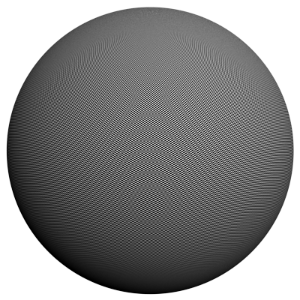
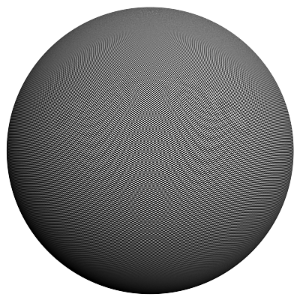

Image Sampler (Antialiasing)
Image Sampler Overview
In V-Ray, an image sampler refers to an algorithm for sampling and filtering the image function, and producing the final array of pixels that constitute the rendered image.
V-Ray implements several algorithms for sampling an image. All image samplers support MAX's standard antialiasing filters, although at the cost of increased rendering time. You can choose between Fixed rate sampler, Adaptive DMC sampler, and Adaptive subdivision sampler.
Example: What is antialiasing?
The following example shows the basic difference between an image with antialiasing, and one without:
No antialiasing (Fixed rate sampler, 1 subdiv)
Antialiasing on (Adaptive subdivision sampler, rate -1/2) The left images are jagged around the edges of the sphere, while the right are smooth. Here are close-ups of the two images:
No antialiasing (Fixed rate sampler, 1 subdiv)
Antialiasing on (Adaptive subdivision sampler, rate -1/2)
Image Sampler
Type - specifies the image sampler type:
-
Fixed - this sampler always takes the same number of samples per pixel;
-
Adaptive DMC - this sampler takes a variable number of samples per pixel depending on the difference in the intensity of the pixels;
-
Adaptive subdivision - this sampler divides the image into an adaptive grid-like structure and refines depending on the difference in pixel intensity.
Examples: Image Sampler Comparisons
Here are some examples demonstrating the quality vs. speed of the image samplers. All the samplers were set to produce approximately the same image quality.The first example is a normal smooth image (no blurry effects), click the images for a larger view:
Fixed rate (4 subdivs)
Render time: 36.1s
Adaptive (subdivs 1/4)
Render time: 4.0s
Adaptive subdivision (rate -1/2)
Render time: 1.8s
Both the adaptive and the adaptive subdivision samplers are substantially faster than the fixed rate sampler.
Here is a more complex example with some fine textures (lots of fine bump mapping) and an area light; this example uses a precalculated irradiance map - the render times are for the final rendering only. Click the images for a larger view.
Note: the Sponza Atrium model was created by Marko Dabrovic ( http://www.rna.hr ) and was one of the models for the CGTechniques Radiosity competition . The Athene model was a free model from the DeEspona Infografica model bank.
Fixed rate
(4 subdivs)

Adaptive
(subdivs 1/4)
Adaptive subdivision
(rate 0/2, threshold 0.05)
In this case, the Adaptive sampler performed best, and the Adaptive subdivision - worst. Why is that? Here is the non-antialiased image, to give an idea of what the image samplers had to deal with.
Some parts of the image are quite "noisy" because of the fine bump map. Lots of image samples were required to smooth this out. Furthermore, each image sample was quite costly to compute - there is an irradiance map and an area light, which (especially the area light) need a lot of computations. With the Fixed and Adaptive samplers, V-Ray knows in advance how many image samples will be taken for a pixel; therefore, it can optimize the computation of some values (the area light for example) so that the final image result is similar, while actually those values are computed with lower accuracy (i.e. tracing fewer shadow rays) for the individual image samples. This cannot be done for the Adaptive subdivision sampler - it does not know in advance how many samples will be computed for a pixel; therefore it needs to maintain a constant (high) accuracy. Constant accuracy is also required in order for the sampler to adapt correctly to the image. This is why, in this example, the Adaptive subdivision sampler performed worse than the other two methods.
Note: the dragon model is from one of the example scene files of 3ds Max 4
The third example is an image with direct GI and motion blur:
Fixed rate
(4 subdivs)
Adaptive
(subdivs 1/4)

Adaptive subdivision
(rate 0/2, threshold 0.1)
In this case, the Fixed rate sampler was the fastest and the Adaptive subdivision sampler was the slowest of all (admittedly, the image computed with adaptive subdivision is very smooth). This is because the cost of supersampling a pixel for the Adaptive and the Adaptive subdivision samplers becomes too great.
Here is the scene without motion blur, with irradiance map, and with the Adaptive subdivision sampler (render time includes GI calculations):
Antialiasing filter
This section allows you to choose an antialiasing filter. All standard 3ds Max filters are supported with the exception of the Plate Match filter.
Example: Antialiasing Filters
Here is an example briefly demonstrating the effect of different antialiasing filters on the final result.
Note that rendering with a particular filter is not the same as rendering without a filter and then blurring the image in a post-processing program like Adobe Photoshop. Filters are applied on a sub-pixel level, over the individual sub-pixel samples. Therefore, applying the filter at render time produces a much more accurate and subtle result than applying it as a post effect. V-Ray can use all standard 3ds Max filters (with the exception of the Plate match filter) and produces similar results to the scanline renderer.
The Adaptive image sampler was used for the images below, with Min/Max rate of -1/3 and the Rand option on.
|
Filter |
Image |
Zoomed-in image |
Comments |
|
Filtering is off |
|
|
Applies an internal 1x1 pixel box filter. |
|
Area filter, size 1.5 (default setting) |
|
|
Slightly blurs the image, visually more pleasing than the box filter. |
|
Area filter, size 4.0 |
|
|
More blurring. |
|
Blend filter |
|
|
Combination of a sharp and a soft filter, kind of dreamy effect. |
|
Catmull-Rom |
|
|
Edge-enhancing filter, often used for architectural visualizations. Note that edge enhancing can produce "moire" effects on detailed geometry. |
|
Mitchell-Netravali |
|
|
Allows control between edge-enhancement and blurring. |
|
MItchell-Netravali, ringing=1.5 |
|
|
Strong edge-enhancement. |
|
Mitchell-Netravali, ringing=2.0 |
|
|
Even more edge enhancement; kind of cartoon-style effect. |
|
Soften |
|
|
Gaussian blur. |


Example: Antialiasing Filters and Moire Effects
This example demonstrates the effect antialiasing filters have on moire effects in your images. Sharpening filters (Mitchell-Netralavli, Catmull-Rom) may enhance moire effects, even if your image sampling rate is very high. Blurring filters (Area, Quadratic, Cubic) reduce moire effects.
Note that moire effects are not necessarily a result of poor image sampling. In general, moire effects appear simply because the image is discretized into square pixels. As such, they are inherent to digital images. The effect can be reduced through the usage of different antialiasing filters, but is not completely avoidable.
The scene is very simple: a sphere with a very fine checker map applied, texture filtering is off. The images were rendered with a very high sampling rate (15 subdivs, or 225 rays/pixel). This is enough to produce quite an accurate approximation to the pixel values. Note that the image looks quite different depending on the filter:
No Filter
Area filter, size = 1.5
Area filter, size = 4.0
Quadratic filter
Sharp quadratic filter
Cubic filter
Video filter
Soften filter,size = 6.0

Cook variable, size = 2.5
Blend, size = 8.0, blend = 0.3
Blackman

Mitchell-Netravali, blur = 0.333, ringing = 0.333

Catmull-Rom
Fixed Rate Sampler
This is the simplest image sampler, and it takes a fixed number of samples for each pixel.
Subdivs - determines the number of samples per pixel. When this is set to 1, one sample at the center of each pixel is taken. If this is greater than 1, the samples are distributed within the pixel. The actual number of pixels is the square of this parameter (e.g. 4 subdivs produce 16 samples per pixel).
Adaptive DMC Sampler
This sampler makes a variable number of samples per pixel based on the difference in intensity between the pixel and its neighbors.
The following diagram shows visually the way V-Ray is placing samples when using the Adaptive DMC sampler. The black squares represent the pixels of the image whie the dots represent the individual samples. In the first pass V-Ray always places the minimum number of samples determined by the Min. Subdivs parameter.. Then the color of samples is compared and more are added where needed in the following passes.
This is the preferred sampler for images with lots of small details (like VRayFur, for example) and/or blurry effects (DOF, motion blur, glossy reflections, etc.). It also takes up less RAM than the Adaptive subdivision sampler.
Min subdivs - determines the initial (minimum) number of samples taken for each pixel. You will rarely need to set this to more than 1, except if you have very thin lines that are not captured correctly, or fast moving objects if you use motion blur. The actual number of pixels is the square of this number (e.g. 4 subdivs produce 16 samples per pixel).
Max subdivs - determines the maximum number of samples for a pixel. The actual maximum number of sampler is the square of this number (e.g. 4 subdivs produces a maximum of 16 samples). Note that V-Ray may take less than the maximum number of samples, if the difference in intensity of the neighboring pixels is small enough.
Use DMC sampler threshold - when this is on (the default), V-Ray will use the threshold specified in the DMC Sampler to determine if more samples are needed for a pixel. When this is off, the Color threshold parameter will be used instead.
Color threshold - the threshold that will be used to determine if a pixel needs more samples. This is ignored if the Use DMC sampler threshold option is on.
Show samples - if this is on, V-Ray will show an image where the pixel brightness is directly proportional to the number of samples taken at this pixel. This is useful for fine-tuning the antialiasing of the image.
Adaptive Subdivision Sampler
This is an advanced image sampler capable of undersampling (taking less than one sample per pixel). In the absence of blurry effects (direct GI, DOF, glossy reflection/refraction etc) this is the best preferred image sampler in V-Ray. On average it takes fewer samples (and thus less time) to achieve the same image quality as the other image samplers. However, with detailed textures and/or blurry effects, it can be slower and produce worse results than the other two methods.
The following diagram shows the way V-Ray works when using the Adaptive Subdivision image sampler. With this mode, V-Ray creates a secondary grid on top of the pixel grid and uses this grid to position the samples. This allows it to use less than a sample per pixel. After the first pass the samples are compared and if the difference between two samples is bigger than the values in the thresholds the grid is subdivided and more samples are added. During the whole time V-Ray has to keep the whole grid in the memory which makes this method less memory efficient compared to the other two methods - see the Notes below.

Min. rate - controls minimum number of samples per pixel. A value of zero means one sample per pixel; -1 means one sample every two pixels; -2 means one sample every 4 pixels etc.
Max. rate - controls maximum number of samples per pixel; zero means one sample per pixel, 1 means four samples, 2 means eight samples etc.
Color threshold - determines the sensitivity of the sampler to changes in pixel intensity. Lower values will produce better results, while higher values will be faster, but may leave some areas of similar intensity undersampled.
Object outline - this will cause the image sampler to always supersample object edges (regardless of whether they actually need to be supersampled). This option has no effect if DOF or motion blur is enabled.
Randomize samples - displaces the samples slightly to produce better antialiasing of nearly horizontal or vertical lines.
Show samples - if this is on, V-Ray will show an image where the pixel brightness is directly proportional to the number of samples taken at this pixel. This is useful for fine-tuning the antialiasing of the image.
Example: Texture Antialiasing
This example deals with texture antialiasing and the effect of the color threshold for the Adaptive and Adaptive subdivision samplers.
V-Ray does not support Max's mechanism for supersampling materials and maps. Instead, texture antialiasing is controlled by the image samplers.
By default V-Ray antialiases everything in the image, including textures. This is especially useful for textures with small details or noisy bump maps as seen in the above Example . The Color threshold parameter controls the extent to which texture antialiasing is performed. The effect of this parameter is most noticeable with the Adaptive subdivision sampler and low min rates. For the four images below, min/max rate of -3/2 was used:
Color threshold 10.0
Color threshold 5.0
Color threshold 1.0
Color threshold 0.1
Note that the edges of the object in those images is always sharp. This is because the Object outline option is turned on - see Example .
If you set the Color threshold to a high value, you are effectively telling V-Ray not to antialias textures. You can use this fact to speed up the rendering of complex materials. Note however, that this will disable antialiasing of V-Ray shadows, reflections, etc. as well.
Example: Randomized Antialiasing
Normally V-Ray places the image sample in a strict grid-like pattern. This may cause unwanted banding of edges that are nearly horizontal or nearly vertical. You can use the Rand option to avoid that. Here is a comparison of an image rendered with and without the Rand option:
Rand = Off
Rand = On
Here are close-ups of the two images:
Rand = Off
Rand = On
The Rand option can be very useful for images with long thin lines as well.
Example: G-Buffer Based Antialiasing
In the example on texture antialiasing, the edges of the object are always sharp, regardless of the value of the Color threshold. This is because the Object outline option is turned on. Here are the first and the last of the images from that example, rendered with Object outline off:
Color threshold = 10.0
Object outline = Off
Color threshold = 0.1
Object outline = Off
Now the antialiasing of edges depends only on the Color threshold. By default, the Object outline option is on, meaning that the outlines of objects are always antialiased. If there are many small objects in the scene, this may slow the rendering. In that case, it's better to turn this off and use only the Color threshold to control image quality.
On the other hand, if there are lots of fine textures in the image, which you don't want supersampled, you can simply turn up the Color threshold. In order to still keep object edges sharp, you'll need the Object outline option.
The other options (Normals, Z-Value, Material ID) allow you to choose additional areas in which to force antialiasing.
Example: Normals
For example, the Normals option allows you to always antialias internal object edges, in addition to the object outline, as shown in the example below (min/max rate -3/2, Color threshold 10.0, Object outline on):
Normals = Off
Normals = On
Notes
-
Which sampler to use for a given scene? The answer is best found with experiments, but here are some tips:
-
For smooth scenes with only a few blurry effects and smooth textures, the Adaptive subdivision sampler with its ability to undersample the image is unbeatable.
-
For images with detailed textures or lots of geometry detail and only a few blurry effects, the Adaptive DMC sampler performs best. Also in the case of animations involving detailed textures, the Adaptive subdivision sampler might produce jittering which the Adaptive DMC sampler avoids.
-
For complex scenes with lots of blurry effects and/or detailed textures, the Fixed rate sampler performs best and is very predictable with regards to the quality and render time.
-
-
A note on RAM usage: image samplers require substantial amount of RAM to store information about each bucket. Using large bucket sizes may take a lot of RAM. This is especially true for the Adaptive subdivision sampler, which stores all individual sub-samples taken within a bucket. The Adaptive DMC sampler and the Fixed rate sampler on the other hand only store the summed result of all sub-samples for a pixel and so usually require less RAM.